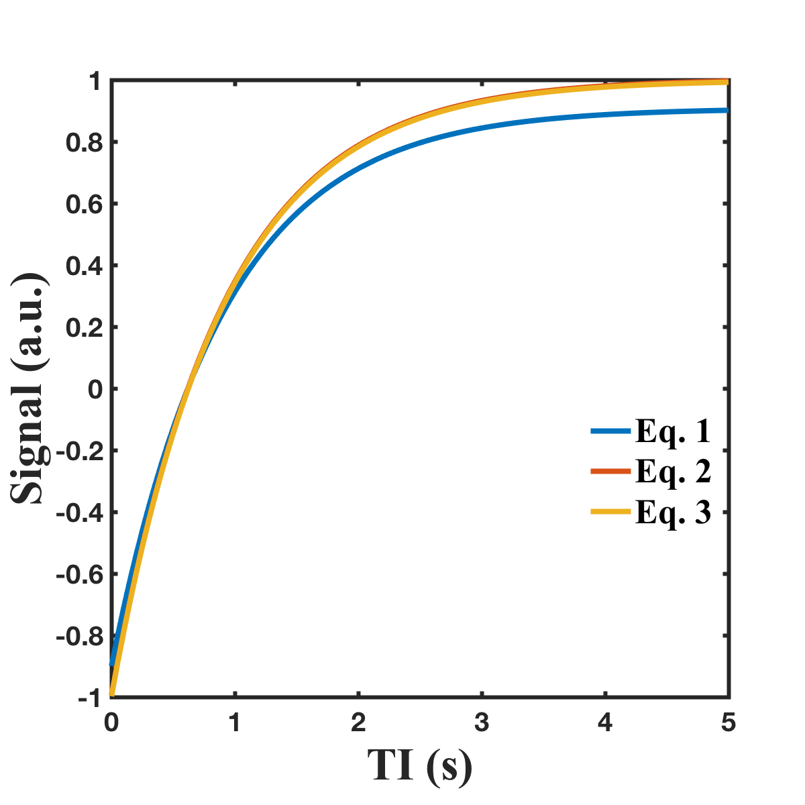
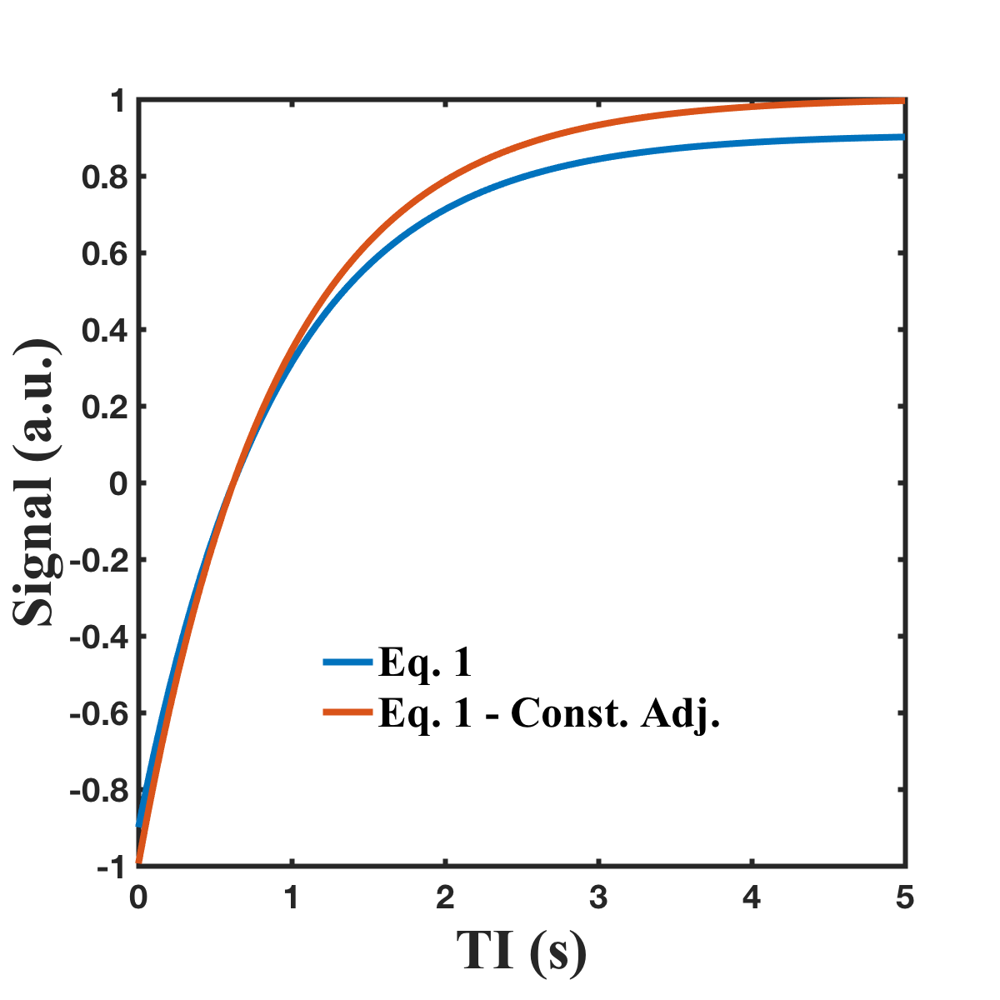

Contents
Mock notebook for Inversion Recovery signal equation comparison
close all
Setup parameters
All times are in seconds All flip angles are in degrees
params.T1 = 0.900; params.TR = 5.0; params.TI = linspace(0.001, params.TR, 100); params.TE = 0.004; params.T2 = 0.040; params.FA = 90; params.signalConstant = 1;
Calculate signals
% Eq. 1 signal_II = ir_equations(params, 'IdealInversion'); % Eq. 2 signal_II_IEAT2 = ir_equations(params, 'IdealInversion_IgnoreExcitationAndT2'); % Eq. 3 signal_II_IEAT2_LTR = ir_equations(params, 'IdealInversion_IgnoreExcitationAndT2_LongTR');
Plot comparison of Eqs 1, 2, 3
h1.figure = figure(1);
h1.plot{1} = plot(params.TI, signal_II); hold on
h1.plot{2} = plot(params.TI, signal_II_IEAT2);
h1.plot{3} = plot(params.TI, signal_II_IEAT2_LTR);
h1.legend = legend({'Eq. 1', 'Eq. 2', 'Eq. 3'}, 'Location', 'best');
h1.xlabel = xlabel('TI (s)');
h1.ylabel = ylabel('Signal (a.u.)');
plotFigureProperties(h1)
 Plot comparison of Eq. 1 with it's constant adjusted for T2/FA contributions
h2.figure = figure(2); % Adjust constant by the T2/FA contributions params.signalConstant = 1 / (exp(-params.TE/params.T2) * sind(params.FA)); assertEqual(size(params.signalConstant), [1, 1]) % Make sure we only added constant TE/T2/FA values. signal_II_ConstantAdjusted = ir_equations(params, 'IdealInversion'); h2.plot{1} = plot(params.TI, signal_II, 'LineWidth', 4); hold on h2.plot{2} = plot(params.TI, signal_II_ConstantAdjusted, 'LineWidth', 4); h2.legend = legend({'Eq. 1','Eq. 1 - Const. Adj.'}, 'Location', 'best'); h2.xlabel = xlabel('TI (s)'); h2.ylabel = ylabel('Signal (a.u.)'); plotFigureProperties(h2)